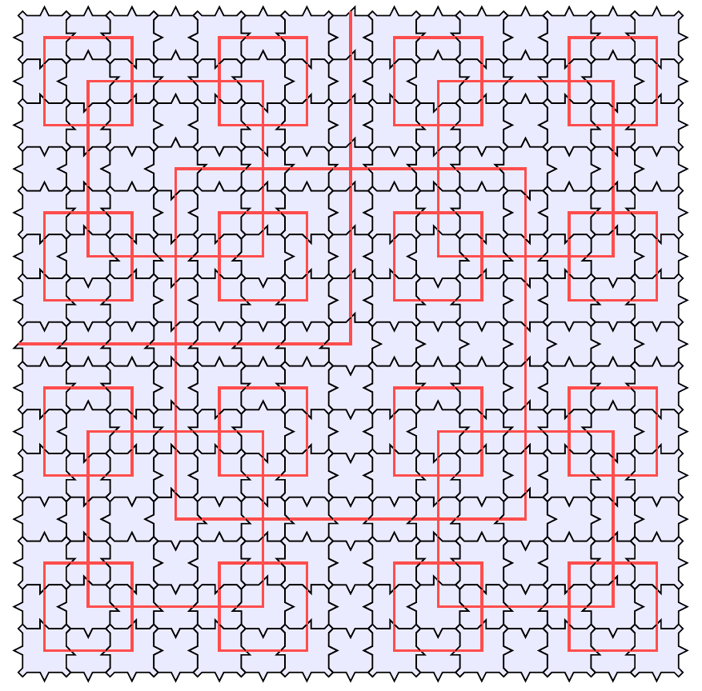

Talks
| Date | Talk | Where | Notes |
|---|---|---|---|
| Oct 2026 | Thompson's F is nonamenable | Seminario "compartamos lo que sabemos de grupos", U. de Chile, Santiago, Chile | |
| Sep 2026 | Extraterrestrial groups 👽 | Dynamical Systems Seminar, Jagiellonian University, Kraków, Poland | Slides |
| Jun 2026 | Dinámica simbólica: autosimulación y extraterrestres | Coloquio de matemáticas, PUC, Chile | Slides |
| Jun 2026 | Extraterrestrial groups 👽 | Dyadisc 9, St. Valérie sur Somme, France | Slides |
| Apr 2026 | Un enfoque aritmético para la construcción de embaldosados aperiódicos | Coloquio las Palmeras, U. de Chile. | |
| Nov 2025 | Recetas de cocina para embaldosar el plano Euclidiano | Pontificia universidad católica de Chile | Slides |
| Nov 2025 | Computable dynamics | Tata institute for fundamental research, Bangalore, India | |
| Nov 2025 | Percolation and cellular automata | Tata institute for fundamental research, Bangalore, India | |
| Nov 2025 | Sofic groups | Tata institute for fundamental research, Bangalore, India | |
| Sep 2025 | Límites inversos de subshifts efectivos | Seminario de sistemas dinámicos de Santiago | |
| Aug 2025 | Grupos extraterrestres | Seminario "compartamos lo que sabemos de grupos", UChile, Santiago, Chile | |
| Jul 2025 | Inverse limits of effective subshifts | Dyadisc 8, Amiens, France | |
| Jul 2025 | The automorphism group of a strongly irreducible subshift | Séminaire SymPA, Lamfa, Amiens, France | |
| May 2025 | Dinámica calculable y aplicaciones | Coloquio del Departamento de Ingeniería Matemática, U. de Chile | |
| Apr 2025 | Cellular automata and percolation in groups | Seminario de probabilidades de Chile | Video |
| Mar 2025 | El grupo de automorfismos de un subshift | Seminario de sistemas dinámicos de Santiago | |
| Mar 2025 | El grupo de automorfismos de un subshift | Instituto de matemáticas de Talca | |
| Mar 2025 | Triangulaciones del cuadrado con área uniforme | Universidad de Santiago de Chile | Video |
| Dec 2024 | Cellular automata and percolation in groups | SOMACHI | |
| Oct 2024 | Dos técnicas para probar teoremas en grupos | Seminario "compartamos lo que sabemos de grupos", USACH, Santiago, Chile | |
| Oct 2024 | Embaldosados aperiódicos | Coloquio DMCC, USACH | |
| Sep 2024 | Cellular automata and percolation in groups | Seminario de sistemas dinámicos de Santiago | |
| Jun 2024 | Self-simulable groups | Groups of Dynamical Origin workshop, Los Angeles, USA | |
| May 2024 | Soficity of free extensions of effective subshifts | Dynamics on zero-dimensional spaces: new connections, Lorentz centre, Leiden, Netherlands | |
| Apr 2024 | Como decorar una cocina con matemáticas | FUNDAPROMAT Panamá (virtual) | Slides |
| Dec 2023 | Como decorar una cocina con matemáticas | SOMACHI, Festival de matemáticas | Slides |
| Oct 2023 | Extensiones libres de subshifts | Seminario de sistemas dinámicos de Santiago | |
| Oct 2023 | Sturmian configurations through asymptotic pairs | Brin Mathematics Research Center, Maryland, USA | Slides |
| Aug 2023 | Entropía en sistemas dinámicos | Jornada de postgrado, USACH, Santiago | Slides |
| Mar 2023 | Self-simulable groups | Dyadisc 5, Liège, Belgium (virtual) | Slides |
| Dec 2022 | Pares asintóticos indistinguibles | Somachi, Chile | Slides |
| Dec 2022 | Self-simulable groups | Group Actions: Dynamics, Measure, Topology, Munster, Germany | Slides |
| Nov 2022 | Insdistinguishability and multidimensional Sturmian configurations | Combinatorics on Words seminar (virtual) | Slides |
| Nov 2022 | The Lanford-Ruelle theorem for actions of sofic groups | UT Groups & Dynamics (virtual) | Slides Video |
| Jun 2022 | Indistinguishability and multidimensional Sturmian configurations | Dyadisc, Liège (virtual) | Slides |
| May 2022 | Formalismo termodinámico en grupos sóficos | Seminario de sistemas dinámicos de Santiago | Slides |
| Mar 2022 | Pares asintóticos indistinguibles | Seminario de álgebra de Guadalajara (virtual) | Video |
| Oct 2021 | Self-simulable groups | UT Groups & Dynamics (virtual) | Slides Video |
| Sep 2021 | Effective dynamics | UT Groups & Dynamics (virtual) | Slides Video |
| Apr 2021 | Self-simulable groups | Séminaire TEICH Marseille (virtual) | Slides |
| Oct 2020 | Acciones calculables de grupos y su dinámica | Seminario de Grupos y Geometría (virtual) | Slides |
| Jun 2020 | On the relation between topological entropy and asymptotic pairs | Seminario de sistemas dinámicos de Santiago (virtual) | Slides |
| May 2020 | Topological Markov properties | One day online session for symbolic dynamics (virtual) | Slides Video |
| Mar 2020 | Sobre la relación entre entropía topológica y parejas asintóticas | Coloquio UNAM, Mexico city, Mexico | Video |
| Feb 2020 | The domino problem for surface groups | Journées de Combinatoire de Bordeaux | Slides |
| May 2019 | Topological entropies of subshifts of finite type in countable amenable groups | Symbolic Dynamical Systems, Oaxaca, Mexico | Slides Video |
| Dec 2018 | The domino problem for word-hyperbolic groups | Conference on Computability, Complexity and Randomness, Santiago, Chile | Slides |
| Oct 2018 | The Dobrushin Lanford Ruelle theorem on steroids | UBC probability seminar, Vancouver, Canada | Slides |
| Mar 2018 | A strongly aperiodic SFT in the Grigorchuk group | Algorithmic questions in Dynamical systems, Toulouse, France | Slides |
| Jul 2017 | A strongly aperiodic SFT in the Grigorchuk group | Pingree Park, Colorado, USA | Slides |
| Jun 2017 | Shift spaces on groups: computability and dynamics | PhD thesis defense | Slides |
| Jun 2017 | Realizability of non-expansive dynamics and applications | Dyadisc, Amiens, France | Slides |
| May 2017 | Symbolic dynamics and simulation theorems | Séminaire Automata IRIF, Paris, France | Slides |
| Apr 2017 | Strongly aperiodic subshifts in countable groups | Séminaire Ernest, Marseille, France | Slides |
| Mar 2017 | Strongly aperiodic subshifts in countable groups | Séminaire de combinatoire et théorie des nombres, Lyon, France | Slides |
| Mar 2017 | The torsion problem for the automorphism group of a full Z^d-shift and its topological fullgroup | Wandering Seminar, Wrocław, Poland | Slides |
| Dec 2016 | The group of reversible Turing machines and the torsion problem for $Aut(A^{Z^d})$ and related topological fullgroups | CMM, Santiago, Chile | Slides |
| Jun 2016 | The domino problem for self-similar structures | CIE, Paris, France | Slides |
| Jun 2016 | The group of reversible Turing machines | AUTOMATA, Zurich, Switzerland | Slides |
| May 2016 | Une courte preuve de l'existence des subshifts fortement apériodiques sur les groupes dénombrables | Interactions, ENS de Lyon, France | Slides |
| Mar 2016 | Que pensent les mosaïques de la monotonie ? | Séminaire détente matématique, ENS de Lyon, France | Slides |
| Jan 2016 | A short proof of the existence of non-empty strongly aperiodic subshifts over {0,1} in countable groups | Séminaire LAMA, Chambéry | Slides |
| Dec 2015 | A short proof of the existence of non-empty strongly aperiodic subshifts over {0,1} in countable groups | Université d'Amiens, France | Slides |
| Nov 2015 | The domino problem for structures between Z and Z^2 | Université Paris-Est Creteil, France. | Slides |
| Oct 2015 | The domino problem for structures between Z and Z^2 | University of Turku, Finland | Slides |
| Oct 2015 | Subshifts in groups: From square-free words on graphs to aperiodic subshifts | Séminaire Combinatoire et Algorithmes de Rouen, France | Slides |
| Apr 2015 | Effectiveness and aperiodicity of subshifts | Journées Calculabilitées, Fontainebleau, France | Slides |
| Nov 2014 | Effectiveness in finitely generated groups | LIAFA (now IRIF), Paris, France | Slides |
Mini courses
2026 Universality of subshifts of finite type for groups
2025 Autómatas celulares y grupos
2025 Autómatas celulares y grupos
2018 Dinámica simbólica sobre los grupos
